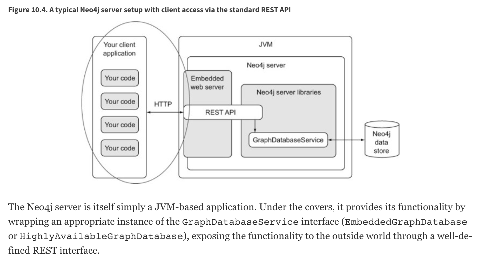
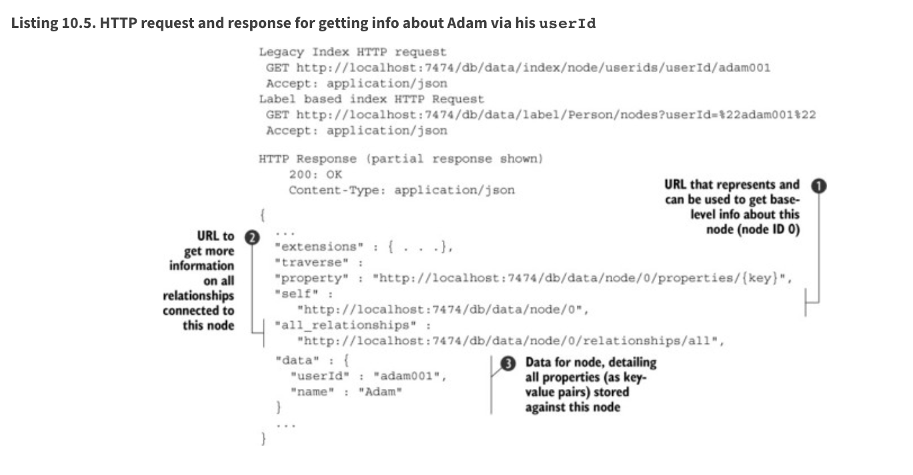

Neo4j
So new project new life. The one before did not take off due to bureaucratic issues - a pity.
Good is that on the new one I will work with Graph Databases. I love graph structures and I deeply believe in them so I am very happy to start this project.
This posts summarizes my learning encounters when working with graph databases and sets some mental structure for working with them.
The notes are based on Neo4j in action.
On the benefit of Graph Structure
This section makes clear why for some structures it makes sense to use graph databases instead of going with relational databases.
Consider for instance a friendship database. This has the following shape:

As you can see above in the T_USER table you assign a primary key
to each person. Then on the T_USER_FRIEND table you have a primary
key id representing the friendship relation id and a friendship
relation represented by two foreign keys referencing the T_USER
primary key.
It follows immediately that if you want to get the number of friends of a single person this can be easily done by:
select count(distinct uf.*) from t_user_friend uf where uf.user_1 = ?
What about finding the number of friends of a all of my friends?
Then you would need to do a join operation in a relational database
select count(distinct uf2.*) from t_user_friend uf1
inner join t_user_friend uf2 on uf1.user_1 = uf2.user_2
where uf1.user_1 = ?
I.e. you would first select all of my friends friends by doing the join operation. And then simply count the number of distinct entries.
You understand now that if you want to find the friends of the friends of my friends you would do 3 join operations etc.
Note that, although you’re only interested in friends of friends of a single user, you have to perform a join of all data in the tuserfriend table, and then discard all rows that you’re not interested in.
It is obvious that as each join computes a cartesian product down the hood such operations become quickly extremely computational intense. Even with smaller databases the size of the joins increase exponentially in the depth of the friendships relations.
It is so straightforward to see that in such cases relational databases are not the best way of representing the data for making such queries.
Graph databases were developed to deal exactly with such type of queries and data models. Here the idea is to use graph theory to answer such queries in a more efficient way using the concept of traversal, i.e. by visiting nodes in the graph by moving between nodes connected with relationships.
The key concept of traversals is that they’re localized—querying the data using a traversal only takes into account the data that’s required, without needing to perform expensive grouping operations on the entire data set, like you do with join operations on relational data.
Note moreover that as long as you perform queries that leverage some graph distance concept - such as the friends of friends - the performance of queries is optimized and scale well with the size of the database. I.e. while making a query at depth 5 (i.e. friends of friends of friends etc.) on a table with million entries will quickly break down your hardware resources - due to the global structure of the query - a graph database will continue to perform the local operations from the node of interest visiting by traversal. I.e. it will continue to do local-queries that will not be much affected of the overall size of the database and can therefore quickly scale.
Label-property based vs. RDF graphs
These are very different and this should be your first call when working with graph databases.
Essentially if you primarily need to walk, query and analyse paths through your graph, then Labelled-Property graphs are probably the way to go. If you are more interested in the nature of the relationships between things, and creating rich semantic representations of things, then RDF graphs hit the spot. (source)
This should give you some more intuition into the topic
So go over it at some point and understand the difference in depth and do some longer post. This is a good reference in this sense.
Data Modeling in Neo4j
Interestingly Neo4j is schemaless, so unlike classical databases you do not have to specify the schema and relationships before starting to write the data into it.
This means that the data model for a Neo4j database is implicit in the data it contains, rather than explicitly defined as part of the database itself. In this sense the data model is a description of the data it contains rather than being a prescription of what it should contain. So that we can say overall that the data model is descriptive.
In this sense the query language works in pattern defined way instead of a rigid relation based way as the one you are used to work in RDMS. The Neo4j query language, Cypher, works by matching patterns in the data, so one way to see your data model is as an inventory of basic patterns.
In this sense, to structure your queries in a meaningful way what you usually do is to draw diagrams for portion of the graph. Understand the common patterns and reason about meaningful queries to do according to that.
Note that in Neo4j the first class citizens as in any graph are
nodes and edges. However, despite of this, not everything must be
modeled as a node or an edge. Nodes and Edges can have
properties. These are attributes of the node that can be accessed
with the standard node.property syntax. Properties are saved as
key-value pairs.
Domain Modeling
This has important consequences for the domain modeling - consider the following example:

Then you should be careful when checking if the above is the most
meaningful model. It might well be that some of these nodes might be
well be modeled as properties. Hence in general when you have
has_property relations consider well if what you need is indeed a
node or whether you can model via properties.
In fact unless, for some reason, you wanted to link users together based on their favorite colors, there’s probably no need for FavoriteColor to be modeled as a node; it could be an property on the User node.
Hence leveraging the property function you would come up with something as that in the end:

Now suppose you want to distinguish between a user’s current and
previous addresses. One way to do this would be to attach an
is_current flag to the address node as an property. But if two
users had lived at the same address, and one was the current and the
other a previous occupant, then whatever value this flag had would
be false for one of them. Being a user’s current address is not a
property of the address itself, or of the user, but of the
relationship between them—a relationship that may change over time,
as users move from one address to another.
Note now that a further way to refine the above is to set the
is_current tag as a property of the relation itself.
So in general when modeling with graph databases you should make yourself clear what you want to model as entities (which will be nodes), what you want to model as relations (which will be edges) and finally the properties that the above should have.
An important thing to consider when making such choice is as well to consider the speed at which you can traverse the graph. It is clear that depending on how you model the entities you will have a better or worse performance.
For instance you should not create new nodes/entities which main
purpose is to store additional properties for some entity. To do
that a new possibility is incorporated into the Neo4j API as of
version 2.0, i.e. the possibility of assigning labels to
nodes. Think of labels as collection IDs through which as
mentioned you can assign nodes to given collections. Note that
single nodes might be assigned to multiple IDs.
Note then that on the one hand by using labels properly you can reduce the overall number of nodes so that you have a more compact graph that is easier to traverse.
On the top of it, you can as well build queries based on the labels. Like this your query in itself does not have to deal with missing data as you can base based on the labels just the nodes that have the additional properties you are interested in.
Note that matching a label at query time is done in the following
way (u:User). Here you are actually selecting all of the nodes
with the label: User.
Neo4j in Production
As the project is starting pretty quickly I will explore the depths of the query syntax and traversals later. I will now go straight to this chapter as pretty soon in the project together with the data model we will have to make this call.
There are essentially two ways to deploy Neo4j, one is embedded mode the other
being server mode. We will see how this decision will influence
how you will work with it.
Embedded vs. Server Mode
At the beginning Neo4j was Java centered. Within the embedded
mode setup, your Java application and new shiny Neo4j database
were happily bundled together as a single deployable entity, and
together they went forth to conquer the brave new world of
interesting graph-based problems.
Neo4j, although written in Java, is inherently just a JVM-based product. This means that, theoretically, any JVM-based language (provided the appropriate libraries or bindings can be found or written) can also make use of the Neo4j database. Thus, Neo4j’s reach naturally began to extend to other JVM-based languages.
But it was the need to operate in more network-friendly
architectures and to support other non-JVM clients that were the
primary drivers behind the introduction of the server mode.
With server mode, the Neo4j database runs in its own process, with
clients talking to it via its dedicated HTTP-based REST API. So if
you want to go Pythonic go with server mode.
Such that in general the ecosystem of Neo4j would look as
follows:

Note that as usual, with the inherent network latency introduced in the server mode, performance is naturally not going to be as good as accessing the database using native code directly. To add more flexibility to the server offering, server plugins and unmanaged extensions. At the moment I do not think that performance is key plus to get up and running with Java is not a question to this stage and will skip it for now and stay in my Pythonic world.
Server Mode
Unlike embedded mode, running Neo4j in server mode involves having all the classes and logic to access and process interactions with the Neo4j database contained within its own dedicated process, completely separate from any clients wishing to use it.
In order to interact with the server process there is a well-defined, yet extensible, HTTP-based REST API.
The general structure of running Neo4j in server mode is the following:

Given the basic structure now the standard question of REST
vs. graphQL vs. other architectures come up.
Let me briefly make the excursus on this to this stage.
GRAPHQL vs REST
GraphQL has nothing to do with graph databases. It is much more a new kind of API originally developed by Facebook that is rapidly expanding.
In simple terms:
GraphQL is a REST API alternative with a structured query language combined with a runtime for query processing and serving data to GraphQL clients (and it is almost always implemented with JSON in mind).
GraphQL isn't tied to any specific database or storage engine and is instead backed by your existing code and data.
While RESTful API have in fact many benefits, such as the caching structures, the general architecture etc. they have a drawback that has led to the development and a general interest on GraphQL. The major drawback being the fact that sometimes RESTful API are too rigid. I.e. this is their power but also their drawback.
Sometimes maybe you are not interested in the entire information you would obtain from the API. Sometimes to get your information of need you have to do very complex and chatty API call. Think of an API where we first have to GET user first and then fetch each friend individually via GET /user:id/friend/:id endpoint, this can result in N+1 queries and is a will known performance issue in API and database queries. This was in fact the behavior you observed on your last project API.
In other words, RESTful API calls are chained on the client before the final representation can be formed for display. GraphQL can reduce this by enabling the server to aggregate the data for the client in a single query. In fact, GraphQL comes handy as it creates an API that allows for arbitrary requests that are complaint with the GraphQL runtime and protocol.
This has pro and cons as especially in the case of open API great care have to be taken to ensure GraphQL queries don’t result in expensive join queries that can bring down server performance or even DDoS the server.
Back to Server Neo4j
So back to the Neo4j server. Given that you are interested in navigating your graph database it might make little sense to use a RESTful approach as for instance to navigate such graph you would have to make multiple iterative calls. Think for instance about this first call:
You can then start from there and navigate your database.
However, this is very much impractical.
In this sense I read online that it is common practice for some use cases to leverage GraphQL in such cases. This is in fact a good example of a possible use case for such technology. In fact there are built-in GraphQL implementations in Neo4j. On the other hand I also read online that some complain about it saying that if you stop by leveraging the GraphQL queries then you probably did not need a graph database in the first place and a document store might have been enough. Whatever it is. I guess both have their point and you will not get completely the point of the discussion until you make yourself your hands dirty.
In any case what is good in Neo4j is that luckily they have implemented a REST API where you can leverage the Cypher query language such that you can leverage the standard traversal properties and get to your data of interest quickly without having to do all of that manual work iterating over different APIs calls repeatedly.
In fact using the Cypher API, you would make POST of the
following form:
On Remote Client Libraries
Although it is possible for you to directly talk with the RESTful Server directly and get your information via raw API as done above many suggest to use client libraries to talk with Neo4j. There again much of the complexity of the raw API is abstracted away such that you can easily communicate in an intuitive way.
What usually happens is that a runtime is added between your client and the server. In the runtime running on a standard framework the complexity is masked and you would use the new library functions and go through it in the following way:

This seems to me quite an overhead also because you would then have to make sure that everything scales well. So try to understand better the implications of taking such an approach should this project become very large at some point.
You can find a list of different runtime specific drivers (i.e. read more as remote REST wrappers) here.
On server Plug-ins
This is a nice feature of the Server Mode. The idea is that as
mentioned sometimes you might get back too much information via
API calls. Instead of processing the response on the client when
you get it, what you can do is to write server Plug-ins.
Server plug-ins provide a mechanism for offloading some of the
processing-intensive logic to the server rather than having to
perform it all on the client, with multiple requests having to
flow backward and forward to accomplish the same thing. Server
plugins are sometimes compared to stored procedures in the
relational database world.
Server plugins have specifically been designed to extend the existing REST API options returned for a node, relationship, or the global graph database. Recall that when you make a request for the detail of a particular node, you get a lot of options back, including an extensions key. This will specify the server extensions specified for your server.
{ ...
"extensions" : { . . .},
"property" : "http://localhost:7474/db/data/node/0/properties/{key}",
"self" : "http://localhost:7474/db/data/node/0",
"data" : { "name" : "Adam" }
... }
To write a server plug-in you can extend a ServerPlugin class
that should be contained in your driver. You should then be sure
that the name of your class extending and inheriting from
ServerPlugin is contained in
org.neo4j.server.plugins.ServerPlugin.
If that is the case you should then see it in the extensions in
the json received from the REST endpoint.
Unmanaged Extensions
If you require complete control over your server-side code, then
unmanaged extensions may be what you’re looking for. Unlike
server plugins, which merely allow you to augment the existing
REST API at specific points, unmanaged extensions essentially
allow you to define your own domain-specific REST API.
This means that instead of dealing with general nodes and
relationships, you can now with a specific set of nodes - say
Users and Movies. This was not an option for server
Plugins. There you could just specify a plugin at a node level
that would be available across all nodes.
Broadly speaking, you define a class, which, through a set of annotations, binds the class to a particular URL pattern and mount point within the Neo4j server. When this mount point is invoked, control is transferred to this class, which can have full access to the Neo4j graph database, allowing the class to perform whatever actions or functionality is required, returning the data in whatever format is desired.
Neo4j for Ontologies
This is a good example of making more value out of Neo4j. At the end of the presentation he rushed a bit too much so it was not easy for an intro person like me. What I am still missing is why you need to go through RDF structures. Probably because the imported Ontology is defined in that terms. Would definitely need to make more research in any case.
As for inference.. I think that to name inference the thing in the video is a little bit too much and misleading. Maybe I am missing a point.
From what I can get the "inference" goes as follows.
You have a graph database containing some entities. You import an ontology that specifies the relation among entities - even inserting new entities and mapping subcategories etc.
You can now search and filter based on the new entities relations defined in the ontology. So you can "infer" (or let's say read) from the ontology some new knowledge on the relations.
So nice but that can be used in a straightforward for my project. If there is an ontology for the case at issue it might be very useful. What you have however to consider is on how to make your semantics sharable. In fact this is a question you should ask when creating your data model.
Do I want to create an ontology on top of data objects to map the model domain? Should I do it in RDF form and feed it into the graph database as described in the video?
Should I work just mapping relations among the data objects themselves without creating a separate ontology on top of it?
These are all questions you should address with the domain experts of your problem. Consider such things in the introductory talk for the project.
Ok lucky me - there seem to be an ontology available for the use case. So it is always worthy to check at the material around.